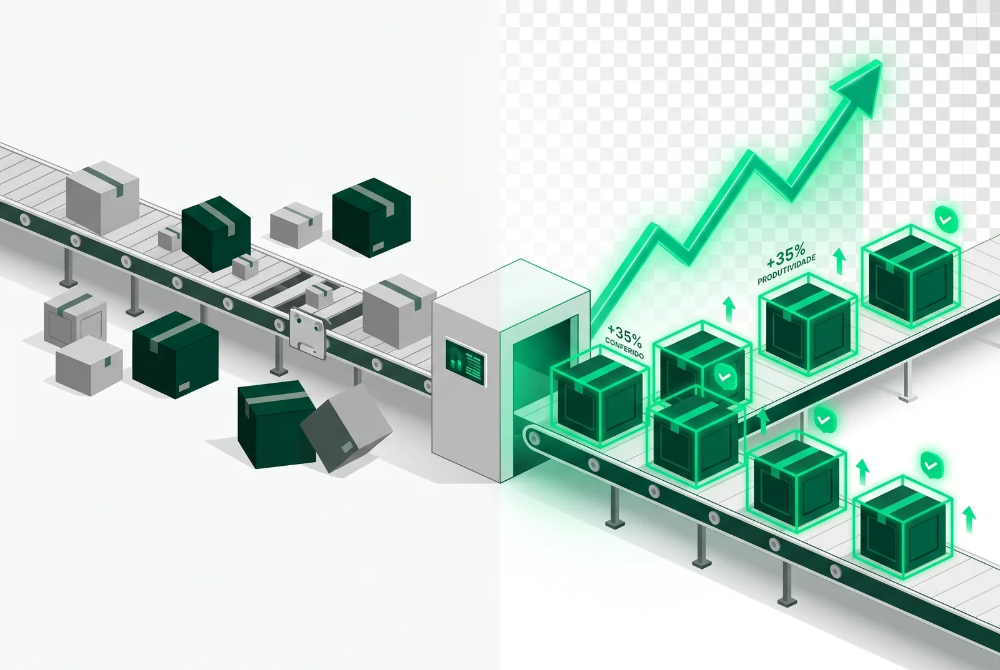

A Promessa Única
Sua infraestrutura de vídeo já grava o passado. Nós auditamos o seu presente.
Transforme câmeras passivas em uma rede de inteligência ativa. A Ecovisa utiliza Visão Computacional de alta precisão para identificar gargalos, garantir segurança e recuperar margem operacional em tempo real.


Transformamos sua infraestrutura atual em uma operação inteligente. Sem troca de hardware, sem burocracia, com retorno validado em tempo recorde.
Você está sentado sobre uma mina de ouro de dados — e ela está desligada.
Câmeras de segurança comuns apenas registram incidentes depois que o prejuízo ocorreu. Na indústria, no aterro ou na cidade, cada segundo não monitorado por IA é um custo de oportunidade: falhas de processo, riscos de segurança e ineficiências logísticas que escorrem pelo ralo do seu OPEX. A cegueira operacional é o custo mais caro da sua empresa.
O que está em jogo
Vídeo armazenado sem virar indicador de performance ou conformidade.
Riscos e perdas só aparecem depois do estrago — tarde demais para agir.
Decisões sem dados visuais = OPEX alto e margem operacional escondida.
Uma única plataforma. Infinitas camadas de inteligência.
Não troque seu hardware. Integramos nossa IA ao seu sistema de CFTV atual. Capturamos, processamos e entregamos insights acionáveis através de quatro verticais especializadas que conversam entre si.
Captura agnóstica
Use o parque de câmeras que você já tem.
Processamento contínuo
Modelos treinados para o seu contexto.
Insights acionáveis
Dashboards e alertas onde a operação vive.
Integração
APIs e ERPs no ritmo do seu time.
O Prejuízo Invisível
99% das Imagens Descartadas
Horas de vídeo que não viram dado acionável.
Riscos Operacionais Ocultos
Falhas e passivos visíveis só depois do estrago.
Perda de Receita por Ineficiência
Gargalos invisíveis comendo margem todos os dias.
Plataforma Ecovisa
Capture (Câmeras do Cliente) → Analise (IA Ecovisa) → Aja (Alertas/Dashboards)
Do pixel à decisão
Nossas Verticais
Otimização da gestão de resíduos
Compliance e rastreabilidade com visão 24/7.
Saiba Mais →Ganho efetivo de produtividade
OEE, qualidade e segurança sem parar a linha.
Saiba Mais →Monitoramento preciso e 24/7
Pátio, docas e integridade de carga.
Saiba Mais →Visão para cidades inteligentes
Mobilidade, segurança e zeladoria com dados.
Saiba Mais →
Diferencial Transversal: Produtividade & IA Visual
Produtividade redefinida com IA Visual. Transformamos dados de imagem em decisões operacionais, otimizando fluxos de trabalho e liberando sua equipe para focar em tarefas estratégicas.
Modelo de Engajamento (A PoC)
Passo 1
Diagnóstico (Sem Custo).
Passo 2
PoC 3 Meses (Validação).
Passo 3
Proposta Comercial (Escala).
Perguntas frequentes
Não troque seu hardware. Integramos nossa IA ao seu sistema de CFTV atual. Capturamos, processamos e entregamos insights acionáveis através de quatro verticais especializadas que conversam entre si.
Passo 1: Diagnóstico (Sem Custo). Passo 2: PoC 3 Meses (Validação). Passo 3: Proposta Comercial (Escala).
Capture (Câmeras do Cliente) → Analise (IA Ecovisa) → Aja (Alertas/Dashboards).
Privacidade e segurança de dados são inegociáveis na Ecovisa. Nós NÃO armazenamos, vendemos ou compartilhamos imagens ou dados operacionais de clientes. Suas imagens permanecem sob seu controle total em todo momento.
Durante a Prova de Conceito, processamos apenas frames necessários para treinar modelos personalizados para sua operação — nunca reutilizados para outros clientes. Todos os resultados analíticos (relatórios, dashboards, dados de saída) pertencem integralmente a você.
Nossa arquitetura está em conformidade com a Lei Geral de Proteção de Dados (LGPD). Quando imagens contêm indivíduos identificáveis, a análise é comportamental agregada, não por identificação individual. Cada engajamento começa com um Plano de Trabalho escrito que detalha exatamente o que acessamos e como tratamos seus dados.
Validamos sua operação sem custos através de uma Prova de Conceito de 90 dias. Resultados visíveis e mensuráveis já nas primeiras 4 semanas.
Integração com ERPs/APIs (JSON).